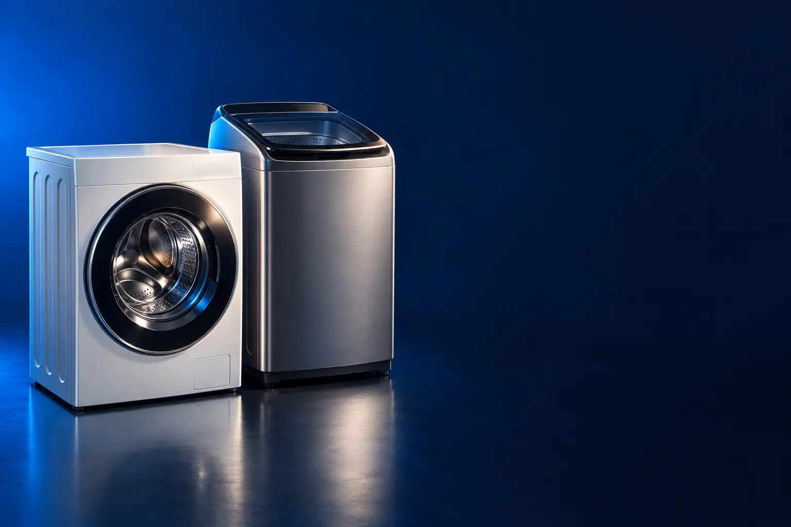

LAVADORA DE ABERTURA SUPERIOR
Melhor máquina de lavar custo-benefício
A lavadora clássica, com tampa em cima: a de melhor preço por quilo.

Melhor custo-benefício em máquina de lavarColormaq 12 kg (LCA12)
CURADORIA TECHAPROVADO · 2026
A escolha começa pela capacidade e pelo espaço da área de serviço. Separamos 9 modelos em 2 perfis e dizemos para quem cada um vale a pena.

NOSSA LEITURA
A capacidade é o peso de roupa seca que cabe. Casal: 11 a 12 kg. Família de 4: 13 a 15 kg. Quem lava edredom de casal em casa: 15 kg ou mais.
COMECE POR AQUI
LAVADORA DE ABERTURA SUPERIOR
A lavadora clássica, com tampa em cima: a de melhor preço por quilo.
LAVA E SECA E FRONTAL
Lava e seca no mesmo aparelho: roupa pronta sem varal.

A FICHA, TRADUZIDA
01 - CAPACIDADE
A capacidade indica quantos quilos de roupa seca a máquina lava de uma vez. Uma carga comum de uma família de 4 pesa de 6 a 8 kg; o edredom de casal pede de 13 a 15 kg de capacidade.
Casal: 11 a 12 kg. Família de 3 a 4: 13 a 15 kg. Família grande ou quem lava cobertor: 15 kg ou mais.
Máquina maior não gasta mais com carga pequena se tiver nível de água ajustável. O que pesa é a área de serviço: meça antes.
02 - ABERTURA
A de abertura superior (tampa em cima) é mais barata e permite pôr roupa no meio do ciclo. A frontal lava com menos água e gasta menos as roupas.
Para quem tem espaço e quer economia na compra, a superior. Para quem quer empilhar com secadora ou economizar água, a frontal.
As lava e seca são todas frontais.
03 - SECAGEM
Na lava e seca, a capacidade de secagem é menor que a de lavagem: uma 11/7 kg lava 11 e seca 7. Para secar tudo, divida a carga.
Vale para apartamento sem varal, regiões úmidas e quem não tem tempo de estender roupa.
Secar consome bastante energia. Use a secagem quando precisar e o varal quando der.
04 - INVERTER E VOLTAGEM
O motor inverter ajusta a velocidade e gasta menos energia, com menos barulho e vibração.
Máquinas de lavar são de uma voltagem só, e cada versão tem anúncio separado. Nesta lista indicamos a voltagem de cada link: confira a da sua tomada.
Ligue direto na tomada, sem extensão, e com aterramento.
A CURADORIA EM DETALHE
9 modelos da pesquisa
PERFIL · 4 MODELOS, DA ENTRADA AO TOP DE LINHA
As lavadoras de abertura superior (top load) custam menos, lavam rápido e permitem colocar roupa no meio do ciclo. Escolha a capacidade pelo tamanho da família e pelo edredom.

ABERTURA SUPERIOR · ALTERNATIVA 1 de 4
Outro caminho: tanquinho
Semiautomático · lavagem zigue-zague · 110 V
Ver preço na AmazonPOR DENTRO DA ESCOLHA
Tanquinho semiautomático de 4,5 kg com lavagem em zigue-zague, agitador e timer com 4 programas.
Não é uma lavadora completa, mas resolve para quem tem pouco espaço e pouca roupa.
| Capacidade | 4,5 kg |
|---|---|
| Tipo | Semiautomático |
| Voltagem | 110 V |
Fonte: ficha e descrição do anúncio, conferidas em 02/11/2026. Dados informados pelo fabricante.
ABERTURA SUPERIOR · CUSTO-BENEFÍCIO 2 de 4
Melhor custo-benefício em máquina de lavar
Automática · 6 programas · antimanchas · 220 V
Ver preço na AmazonPOR DENTRO DA ESCOLHA
Lavadora automática de 12 kg com seis programas de lavagem, sistema antimanchas, filtro duplo de fiapos e centrifugação extra.
Automática de 12 kg com seis programas de lavagem, sistema antimanchas, filtro duplo de fiapos e centrifugação extra para a roupa sair mais seca. Atenção à voltagem: esta versão é 220 V.
| Capacidade | 12 kg |
|---|---|
| Programas | 6 |
| Voltagem | 220 V |
Fonte: ficha e descrição do anúncio, conferidas em 08/11/2026. Dados informados pelo fabricante.
ABERTURA SUPERIOR · AVANÇADO 3 de 4
Cesto inox · Jet&Clean · Time Control · 220 V
Ver preço na AmazonPOR DENTRO DA ESCOLHA
Lavadora de 15 kg com cesto inox, dispenser autolimpante Jet&Clean, filtro Ultra Filter que retém até 8 vezes mais fiapos e painel digital com Time Control, que mostra e ajusta a duração do ciclo.
O cesto inox e o dispenser autolimpante evitam resíduo de sabão e mau cheiro, e o Time Control deixa você encurtar o ciclo quando a roupa está pouco suja.
| Capacidade | 15 kg |
|---|---|
| Cesto | Inox |
| Painel | Digital com Time Control |
| Voltagem | 220 V |
Fonte: ficha e descrição do anúncio, conferidas em 08/11/2026. Dados informados pelo fabricante.

ABERTURA SUPERIOR · TOP DE LINHA 4 de 4
Top de linha abertura superior
17 kg · cesto inox · super silencioso · 127 V
Ver preço na AmazonPOR DENTRO DA ESCOLHA
A mesma linha Essential Care com 17 kg de capacidade, Jet&Clean, Ultra Filter, ciclos rápidos e programa super silencioso.
Custa pouco mais que a de 15 kg; a diferença é caber o edredom.
| Capacidade | 17 kg |
|---|---|
| Cesto | Inox |
| Voltagem | 127 V |
Fonte: ficha e descrição do anúncio, conferidas em 02/11/2026. Dados informados pelo fabricante.
PERFIL · 5 MODELOS, DA ENTRADA AO TOP DE LINHA
As lava e seca têm abertura frontal, lavam com menos água e secam a roupa no mesmo aparelho. São ideais para apartamento sem área de serviço grande ou para quem não tem onde estender roupa.

LAVA E SECA · CUSTO-BENEFÍCIO 1 de 5
Melhor custo-benefício em lava e seca
Motor inverter · 16 programas · cesto inox · 127 V
Ver preço na AmazonPOR DENTRO DA ESCOLHA
Lava e seca de 11 kg com motor inverter BLDC (mais econômico e silencioso), 16 programas, cesto inox e função Reload para colocar roupa depois de iniciado o ciclo.
A lava e seca mais acessível que passou nos filtros, já com motor inverter.
| Capacidade | 11 kg |
|---|---|
| Motor | Inverter |
| Voltagem | 127 V |
Fonte: ficha e descrição do anúncio, conferidas em 02/11/2026. Dados informados pelo fabricante.

LAVA E SECA · ALTERNATIVA 2 de 5
Outro caminho: frontal só lava
Só lava · vapor · lavagem de 15 min · 127 V
Ver preço na AmazonPOR DENTRO DA ESCOLHA
Lavadora frontal de 11 kg com Digital Inverter, limpeza com vapor que elimina 99,9% das bactérias, lavagem rápida de 15 minutos e tambor Diamond Drum, que preserva os tecidos.
Para quem não precisa secar, a frontal lava com menos água e menos desgaste.
| Capacidade | 11 kg |
|---|---|
| Secagem | Não |
| Voltagem | 127 V |
Fonte: ficha e descrição do anúncio, conferidas em 02/11/2026. Dados informados pelo fabricante.

LAVA E SECA · INTERMEDIÁRIO 3 de 5
Conectada · titanium · 127 V
Ver preço na AmazonPOR DENTRO DA ESCOLHA
Lava e seca de 10,5 kg da linha HealthGuard, conectada ao celular, com acabamento titanium.
O degrau sobre a Philco é a conexão com o app.
| Capacidade | 10,5 kg |
|---|---|
| Conectada | Sim |
| Voltagem | 127 V |
Fonte: ficha e descrição do anúncio, conferidas em 02/11/2026. Dados informados pelo fabricante.

LAVA E SECA · AVANÇADO 4 de 5
3 em 1: lava, seca e higieniza · Digital Inverter · 220 V
Ver preço na AmazonPOR DENTRO DA ESCOLHA
Lava 11 kg, seca 7 kg e higieniza a seco, eliminando odores e até 99,9% das bactérias sem água. Motor Digital Inverter e tambor Diamond Drum.
Lava 11 kg, seca 7 kg e higieniza a seco, útil para casacos e peças que não vão à água. Tem motor Digital Inverter e tambor Diamond Drum. É 220 V.
| Capacidade | 11 kg lava / 7 kg seca |
|---|---|
| Extras | Higienização a seco |
| Voltagem | 220 V |
Fonte: ficha e descrição do anúncio, conferidas em 02/11/2026. Dados informados pelo fabricante.

LAVA E SECA · TOP DE LINHA 5 de 5
Top de linha lava e seca
IA AIDD · TurboWash 59 · vapor · Wi-Fi · 110 V
Ver preço na AmazonPOR DENTRO DA ESCOLHA
Lava 14 kg e seca 8 kg, com inteligência artificial AIDD que reconhece o tecido e ajusta o ciclo, TurboWash 59, vapor, ciclo rápido de 14 minutos e controle pelo app LG ThinQ.
A maior capacidade e a mais automática da lista.
| Capacidade | 14 kg lava / 8 kg seca |
|---|---|
| IA | AIDD |
| Voltagem | 110 V |
Fonte: ficha e descrição do anúncio, conferidas em 02/11/2026. Dados informados pelo fabricante.
Nenhum modelo encontrado. Tente outro termo ou volte para Todos.
LADO A LADO
| Modelo | Perfil | Posição | Capacidade | Destaque |
|---|---|---|---|---|
| Tanquinho Plus 4,5 kg | Abertura superior | Alternativa | 4,5 kg | Semiautomático · lavagem zigue-zague · 110 V |
| Colormaq 12 kg (LCA12) | Abertura superior | Custo-benefício | 12 kg | Automática · 6 programas · antimanchas · 220 V |
| Electrolux 15 kg Premium Care (LEC15) | Abertura superior | Avançado | 15 kg | Cesto inox · Jet&Clean · Time Control · 220 V |
| Electrolux 17 kg Essential Care (LED17) | Abertura superior | Top de linha | 17 kg | 17 kg · cesto inox · super silencioso · 127 V |
| Philco Lava e Seca 11 kg Eco InvertPlus (PLS11A) | Lava e seca | Custo-benefício | 11 kg | Motor inverter · 16 programas · cesto inox · 127 V |
| Samsung Lavadora Frontal WW11T 11 kg | Lava e seca | Alternativa | 11 kg | Só lava · vapor · lavagem de 15 min · 127 V |
| Midea Lava e Seca HealthGuard 10,5 kg | Lava e seca | Intermediário | 10,5 kg | Conectada · titanium · 127 V |
| Samsung Lava e Seca WD11M 11/7 kg | Lava e seca | Avançado | 11 kg lava / 7 kg seca | 3 em 1: lava, seca e higieniza · Digital Inverter · 220 V |
| LG Lava e Seca VC4 14 kg ThinQ | Lava e seca | Top de linha | 14 kg lava / 8 kg seca | IA AIDD · TurboWash 59 · vapor · Wi-Fi · 110 V |
CONSIDERAÇÕES FINAIS
Máquinas de lavar têm preços próximos entre capacidades vizinhas, por isso a escada tem menos degraus. Modelos com estoque de uma unidade ficaram de fora.
A Colormaq 12 kg (LCA12) para casal e família pequena, e a Electrolux 15 kg para família de 3 a 5 pessoas.
Para quem não tem varal ou mora em lugar úmido, sim. Para quem tem espaço para estender, uma lavadora comum sai mais barata.
De 13 a 15 kg.
A superior custa menos; a frontal economiza água e preserva as roupas.
Porque ele muda várias vezes por dia. O botão leva ao valor atualizado na loja.
TRANSPARÊNCIA EDITORIAL
Separamos as máquinas pelo tipo (abertura superior ou lava e seca) e conferimos a voltagem de cada link. Cada modelo precisa responder com clareza "para quem ele é o certo".
Em cada perfil há modelos em faixas de preço diferentes, e cada degrau precisa entregar algo que o anterior não entrega. Dois modelos com a mesma proposta não entram juntos.
Ficha e especificações foram conferidas nos anúncios das lojas em 02/11/2026.
Os links de compra desta página são de afiliado: se você comprar por eles, o TechAprovado pode ganhar uma comissão, sem custo adicional para você. Isso não muda a ordem nem a escolha dos produtos.
📲 GUIAS E DICAS NO SEU FEED
Dicas práticas antes de comprar, em carrosséis e vídeos curtos, sempre com link para o guia completo.